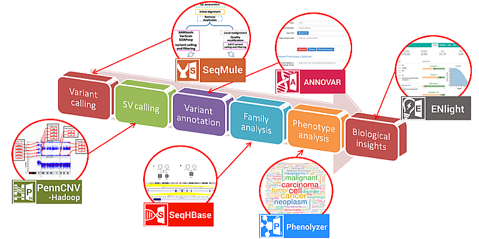

Our Research
Bioinformatics methods to understand personal genomes
We develop fully automated pipelines for genome and exome sequencing analysis: all the way from raw sequencing data to biological insights.A new generation of sequencing platforms that perform high-throughput sequencing have now made it possible for individual laboratories to generate enormous amounts of DNA sequence data. However, there is a growing gap between the generation of massively parallel sequencing output and the ability to process, analyze and interpret the resulting data. We develop a suite of bioinformatics approaches to improve understanding of the functional content and clinical insights from genome sequencing data.
Some examples of the computational tools that we created include: SeqMule, PennCNV, ANNOVAR, Phenolyzer, InterVar, and EHR-Phenolyzer. SeqMule is a computational workflow that integrates computational- cluster-free parallelization capability built on top of the variant callers, and facilitates normalization/intersection of variant calls to generate consensus call set with high confidence. PennCNV is a copy number variation detection tool that was originally designed for microarrays but was extended to work on next-generation sequencing data. ANNOVAR is an efficient software tool to utilize update-to-date information to functionally annotate genetic variants detected from diverse genomes (including human, mouse, worm, fly and many others). Phenolyzer is a computational tool that prioritize disease candidate genes based on a list of clinical phenotypes.The EHR-Phenolyzer extracts phenotypic information from the EHR and translates it into standardized terms using natural language processing, and prioritize candidate genes to speed up genetic diagnoses.
The combination of these software tools enabled fast, accurate and reliable whole-genome/exome sequencing data analysis on personal genomes.
Computational algorithms for long-read sequencing data
We develop novel methods and software tools for long-read sequencing data on diverse technical platforms, such as PacBio, Nanopore, 10X Genomics, Bionano Genomics.We and others have shown that long-read sequencing is able to detect SVs far more comprehensively than short-read sequencing. Coupled with innovative bioinformatics analysis, long-read sequencing can identify pathogenic SVs missed by short-read sequencing, and even detect those traditional “unsequenceable” SVs. Furthermore, long-read sequencing can detect DNA and RNA modifications (such as 5mC, 4mC and 6mA methylations) directly, contributing to our understanding of the epigenetic regulation of human genome. We are developing novel methods and software tools to improve our understanding of long-read sequencing data, facilitate genetic discoveries and accelerate the implementation of precision medicine.
Some examples of the tools that we developed include RepeatHMM, NextSV, LinkedSV, NanoMod, DeepMod and NanoVar. RepeatHMM estimate repeat counts of Microsatellite expansion, such as trinucleotide repeat expansion (TRE), from long-read sequencing data. NextSV is a meta-caller to perform SV calling from low coverage long-read sequencing data. LinkedSV is a novel SV detection algorithm which combines two types of evidence to detect structural variants from linked-read sequencing data. NanoMod is a flexible tool to detect DNA modifications with single-base resolution from raw signals in Nanopore sequencing. DeepMod is a bidirectional recurrent neural network (RNN) with long short-term memory (LSTM) to detect DNA 5mC and 6mA modifications using raw electric signals of Oxford Nanopore sequencing.
Finally, we are evaluating the use of long-read sequencing to perform complete genome assembly on mixed microbial communities, and assess how this technology can significantly improve our understanding of microbiome and human health, compared to traditional 16s studies or shotgun sequencing studies using Illumina sequencing. Computional tools are being developed to handle these new types of challeging genomic data.
Deep phenotyping of electronic health records (EHR)
We develop big data analytical approaches to mine information from electronic health records.Translating advances in genomic medicine into precise disease diagnoses and personalized disease prevention and treatment for patients can be realized if and only if we can accurately identify and interpret genetic variants associated with human diseases. Integration of phenotypes from electronic health records (EHRs) and clinical sequencing data for patients likely to have monogenetic disorders promises to improve the efficiency and effectiveness of genomic diagnostics. However, innovative and scalable methods are still lacking for abstracting relevant patient phenotypes from EHRs, for using phenotypic data to inform the prioritization of variants, and for systematically comparing disease phenotypes across diseases.
We are developing and validating scalable approaches to abstracting characteristic phenotypes of genetic disorders from EHR narratives and standardize the concept representations of these EHR phenotypes. We are also improving EHR-Phenolyzer, an EHR phenotype-driven scoring system to infer the causal genetic variants for patients with suspected monogenetic disorders, through a probabilistic disease diagnosis and knowledge discovery system. The phenotype-driven learning system will be evaluated and optimized for genomic diagnosis and discovery using clinical exome sequencing data.
These developments will enable efficient, scalable extraction of maximally useful information from EHRs to provide clinical decision support for genetic diagnoses, improve our understanding of the nuanced phenotypic manifestations of genetic disorders, and ultimately facilitate the implementation of genome-guided precision medicine in clinical practice.
Graduate rotation and undergraduate research projects
We offer a variety of dry and wet lab opportunities for rotation students and undergraduate research students to perform genomics research in our lab.- Detection and annotation of complex structural variants Although short-read sequencing has been widely used in research and clinical settings, it has limited ability to identify SVs due to the presence of repeat elements. It is known that pathogenic SVs might be missed by short-read sequencing, potentially contributing to the low diagnostic rates (~30-40%) in clinical genome/exome sequencing. The lack of reliable tools for clinical interpretation of SVs further limits our ability to identify mutations that contribute to human diseases. The main goal of this project is to develop a suite of computational tools to detect structural variants (SVs) by multiple genomics technologies (including but not limited to linked-read sequencing, optical mapping, long-read sequencing), and evaluate various tools on several real data sets generated on undiagnosed subjects or cancer samples. In addition, based on InterVar, a framework we previously developed for clinical interpretation of SNPs/indels, the student may also participate in the development of a SV annotation workflow to identify and prioritize disease-relevant SVs from tens of thousands of SV calls per human subjects.
- Detection of microsatellite (tandem repeats) in genetic syndromes Microsatellites, repeats of certain DNA motifs (typically 1-6 bases), widely exist in human genomes. The repeat expansions of microsatellites in human genome have been found to cause many brain diseases, such as Huntington's disease and spinocerebellar ataxia. However, traditional next-generation sequencing techniques cannot assay microsatellite accurately, due to technical limitations of the sequencing platforms. Long-read sequencing platform developed by PacBio and Oxford Nanopore can potentially address these limitations. Our lab has developed RepeatHMM, a computational tool for detecting microsatellite from long-read sequencing data on human genomes. However, the error rates of base calls in repeat regions are higher than other regions due to the low complexity, which poses a challenge for repeat quantification from sequence data alone.We are currently developing novel deep learning method, which uses a recurrent neural network to estimate self-similarity of Nanopore signals of neighborhood subsequences with repeat length, and then automatically detect repeat regions in long reads. The research project will evaluate a variety of bioinformatics methods on repeat detection, participate in the development of novel methods, and can participate in the writing of high impact scientific manuscripts.
- Exploring relationships between human diseases and phenotypes through text mining Translating advances in genomic medicine into precise disease prevention and treatment for patients can be realized if and only if we can accurately identify and interpret genetic variants associated with human disease. It is well known that prior knowledge on disease-gene relationships can be mined from diverse knowledgebases such as the electronic health records (EHRs) and published scientific literature. However, innovative and scalable methods are still lacking for abstracting relevant patient phenotypes from EHRs or scientific manuscripts, for using phenotypic data to inform the prioritization of genes/variants, and for systematically comparing and aggregating disease phenotypes across patients. This research project is part of an effort to develop comprehensive gene- phenotype-disease knowledgebases to help interpret genome sequencing data for patients with genetic diseases. We will build a benchmarking data set from published scientific manuscripts on human genetic diseases or genetic case reports, as well as internal clinical notes on patients with confirmed genetic diagnosis at CHOP. We will address two questions: (1) whether natural language processing algorithms can be applied to automate gene-finding, based on clinical descriptions from published literature or clinical notes (2) what is the optimal parameters and approaches for ranking causal genes higher within the list of all genes, based on the benchmarking data sets (3) How state of the art method such as BERT and GPT2 can be applied in the context of genetic diagnosis using phenotype information hidden in EHRs.
- Development of novel genomic assays for neurological diseases We will develop novel genomic assays for repeat expansions involved in various ataxia or other neurological disorders, and evaluate its clinical utility by comparing to requested clinical tests (WES and repeat panels). We have previously developed barcoded amplicon assays on various ATXN, HTT and C9orf72, and we will extend to other repeat types so that we can test all known repeat expansions simultaneously. We will compare results to commercial assays that only examine specific repeat expansions and are only offered by three diagnostic labs across US, to evaluate the technical advantage and commercial viability of the novel genomic approach. More importantly, our novel approach allows long-range haplotype phasing for each individual patient, thus making it feasible for individualized gene therapy using CRISPR technologies through long- range allele-specific gene targeting.